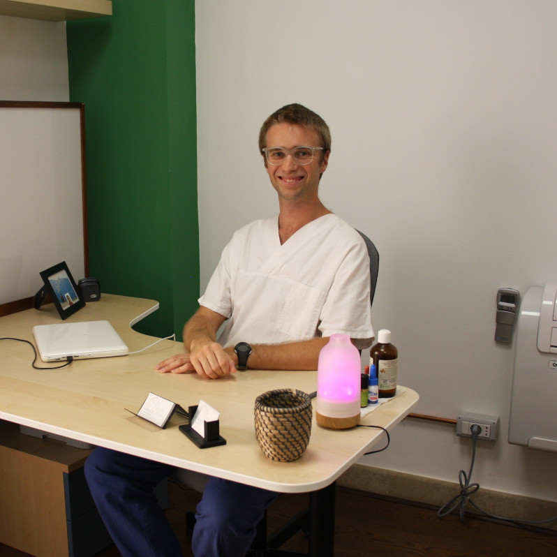
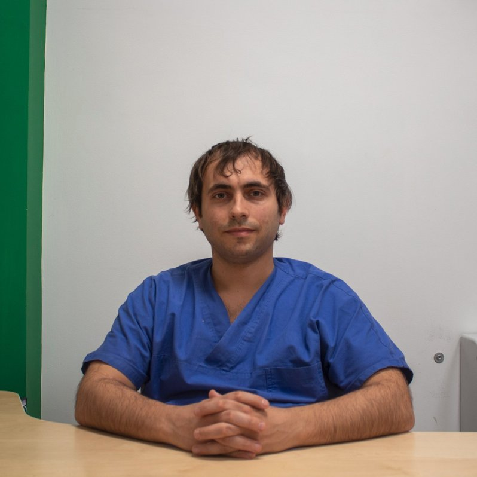

Chi siamo
Il Salice nasce dalla volontà di due amici di lavorare insieme per portare il trattamento e le tecniche osteopatiche anche a San Giovanni in Marignano. Entrambi massofisioterapisti, Marco e Giacomo si sono specializzati nell'esecuzione di manovre osteopatiche, tra le quali ad esempio il trattamento fasciale e il cranio sacrale.
Marco De Canal
Giacomo Muccioli
Il trattamento osteopatico
Cos'è
Nata più di un secolo fa dalle intuizioni del medico e chirurgo americano A. T. Still, oggi l'osteopatia si configura come medicina olistica manuale, racchiudendo in sé sia i tratti della disciplina scientifica (studio approfondito dell'anatomia, solide basi fisiologiche) sia quelli dell'arte (fine sensibilità manuale, personalizzazione del piano terapeutico).
Secondo la fisolofia osteopatica lo stato di salute ottimale si raggiunge quando tutte le componenti di una persona sono in equilibrio. Ciò avviene naturalmente, perché il corpo è dotato di grandi capacità di rigenerazione e autoguarigione. Talvolta però succede che queste capacità vengano ostacolate o addirittura bloccate dall'instaurarsi di disfunzioni, che a lungo andare possono degenerare in vere e proprie patologie.
Nell'esecuzione del trattamento osteopatico l'obiettivo principale è la ricerca delle cause del problema, che possono anche essere distanti dalla zona di manifestazione. Una volta individuate, si procede al loro trattamento.
L'indagine e la diagnosi osteopatica si svolgono prevalentemente con un ascolto attento e fine dei tessuti del paziente, tramite le mani del terapista.
Per chi
Adulti
Troppo stress, abitudini errate nell'ambiente di lavoro o a casa e la carenza di attività sportiva sono caratteristiche ricorrenti nella vita di molti adulti di oggi. Questi fattori possono portare all'instaurarsi di grandi tensioni meccaniche dell'apparato muscolo-scheletrico, che a loro volta possono evolversi in disequilibri:
- meccanici, come disfunzioni, riduzioni di mobilità, blocchi articolari o alterazioni posturali;
- biochimici, come stati infiammatori diffusi o alterazioni della pressione;
- psico-emotivi, come un'ipersuscettibilità, una costante insoddisfazione o disturbi dell'attenzione.
Aver cura di sé tramite il trattamento osteopatico permette di migliorare e risolvere alla radice molte di queste problematiche, migliorando notevolmente la qualità della vita.
Anziani
Con il progredire dell'età insorgono dolori e problemi fisici che compromettono gravemente la qualità della vita. In molti casi con il trattamento osteopatico è possibile ridurre le tensioni che causano il dolore e recuperare una mobilità e una postura migliori.
Sportivi
Il fisico dello sportivo professionista è normalmente soggetto a grandi sollecitazioni. Se non vengono adeguatamente gestite queste possono portare a disfunzioni, cali di performance, e problemi di salute. Il trattamento osteopatico contribuisce al recupero e mantenimento della forma fisica ottimale: migliora le performance, accorcia i tempi di recupero e riduce il rischio di infortuni.
Anche per lo sportivo amatoriale il trattamento osteopatico è importante: lo aiuta a correggere posture errate che possono derivare dalla pratica sportiva e risolve tutte quelle piccole problematiche dolorose che rischiano di precludere l'attività.
A cosa serve
Sono tanti i problemi di salute che ogni giorno incontriamo in studio, spesso molto diversi tra loro. I più frequenti sono:
- cervicalgia: dolore al collo che può irradiarsi dalle spalle fino alle mani, talvolta con formicolii;
- lombalgia: basso mal di schiena a cui si associano talvolta problematiche intestinali o alle gambe;
- cefalee ed emicranie: varie forme di mal di testa che possono durare per più giorni e talvolta si associano a nausea e vertigini;
- sciatalgie: bruciore persistente oppure sensazioni di scosse intense nel nervo sciatico;
- blocchi articolari: chiamati anche "colpi della strega", dolorosi ed invalidanti.
- disfunzioni dell'apparato gastro-enterico: possono causare sintomi fastidiosi come stitichezza, dolori addominali, sonnolenza dopo i pasti o bruciore di stomaco.
Cosa facciamo
Come si svolge la terapia
Valutazione
Durante il primo appuntamento, di circa un'ora, viene fatta una valutazione generale, per raccogliere le informazioni necessarie ad impostare il successivo iter terapeutico. La valutazione riguarda il corpo nella sua totalità, secondo un approccio olistico: questo permette di individuare le cause dei disturbi anche quando queste si trovano in zone distanti o apparentemente scollegate.
Intervento
Gli appuntamenti successivi hanno una durata di circa 45-50 minuti, durante i quali si procede al trattamento manuale vero e proprio. Ogni seduta si conclude con una breve verifica per valutare i risultati ottenuti. Tipicamente un ciclo di trattamenti comprende dai 3 ai 6 appuntamenti, anche se questo può variare molto in base al soggetto e alla problematica in questione!
Esercizi
Un supporto importante al lavoro terapeutico che viene fatto in studio sono gli esercizi rieducativi o di allungamento, da svolgere quotidianamente a casa. Questi vengono proposti in maniera personalizzata per ogni paziente, e verificati in studio di volta in volta.
Tipologie di trattamento
Le metodologie di trattamento che adottiamo nel nostro studio comprendono:
- terapia manuale osteopatica
- cranio sacrale
- fasciale
- viscerale
- riabilitazione e rieducazione post trauma o post chirurgia
- rieducazione e riequilibrio posturale